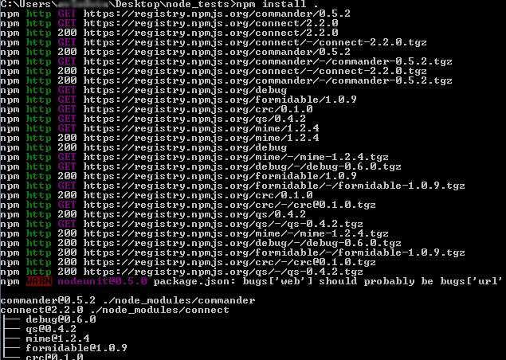

What's all the fuss about
Node.js
Alexandru Vladutu
Now: JavaScript developer
Before: I have previously worked as a backend developer (PHP, MySQL), coding extensions for the Joomla! CMS.
Contact:
You'll get to see source code in this presentation, please bear with me.
Node.js
- "Node's goal is to provide an easy way to build scalable network programs." - Ryan Dahl, Node.js creator
- Server-side JavaScript environment (no DOM) which uses an asynchronous event-driven model.
- It's single threaded.
- Implemented on top of V8, the engine behind Google Chrome. The core is written in C++ and the rest in JavaScript.
- Similar in design to Ruby's EventMachine and Python's Twisted
- It was build from the ground up with the asynchronous architecture in mind, there are no sync libraries that you can accidentally include (and thus slow down your app)
- Implements the CommonJS specification for its built-in module system
- Cross platform: OSX, Linux, Windows
Why use Node?
- It's extremely easy to do I/O programming using the event-driven model
- Great tool for network related stuff, it can handle thousands of concurrent connections with minimal overhead (CPU/memory) on a single process!
- Code in same language as you do in the the browser -> whole app in JavaScript - no context switching
- It implements the latest ECMAScript specs (no IE6 here!)
- JavaScript war: Node is fast and will get even faster, V8 will always improve
- Fantastic community and lots of new modules beeing uploaded to Github daily
Good uses cases
- Realtime applications: games, collaborative apps, instant messaging, IRC servers/clients, you name it..
- Streaming data
- Inter-process communication
- Cluster management
- Network traffic analyzer
- Proxies
- JSON APIs
- Single page apps
- "Talking to" command line tools
- etc
When Node may not be the solution for your use case
- Your application isn't expecting a high level of concurrency, it's a simple simple CRUD / HTML app. You are better off here using a fully-fledged web framework like Rails, Django, CakePHP for example.
- CPU heavy apps with little I/O, like video encoding software or artificial intelligence. For these kind of use cases, C or C++ would be a better fit.
Challenges with event-based programming
With threads you build up the call stack and when you throw an error you know exactly where you came from, because there's the history of the stack. With single threaded environments the state is destroyed, because you get back down the event loop and something else happens.
When an error occurs you only see the line number and where it's from, but you don't know how you got there.
Bad:
var http = require('http'), server;
try {
server= http.createServer(function (req, res) {
res.writeHead(200, {'Content-Type': 'text/plain'});
res.end('Hello World\n');
}).listen(80);
}
catch (err) {
console.log(err);
}
Solution:
var http = require('http'), server;
server = http.createServer(function (req, res) {
res.writeHead(200, {'Content-Type': 'text/plain'});
res.end('Hello World\n');
}).listen(80);
server.on('error', function(err) {
console.log("There's been an error with the server :-(", err);
});
Installing Node.js
There are installers for Windows, Mac and even package managers for Linux, but the best way to install it is using NVM (Node Version Manager) or N.
NVM is similar to Ruby's RVM and let's you install multiple Node versions (it will compile them) on your system and switch between them anytime (note: not available for Windows).
1, 2, 3.. go:
- install nvm: git clone git://github.com/creationix/nvm.git ~/nvm
- put this into your .bashrc: . ~/nvm/nvm.sh
- installing a node version: nvm install v0.6.15
- set default node version: nvm alias default 0.6.15
You're good to go, verify that with node -v && npm -v
You run node programs in the terminal with node filename.js
Keep in mind that stable releases are even-numbered (0.4, 0.6), while unstable releases are odd (0.3, 0.5)
Node modules
Node.js implements the CommonJS specification for its built-in modules
A basic module
/* logger.js */
var logger;
logger = {
'info': function(msg) { console.log(':: ' + msg); },
'error': function(msg) { console.log('!! ' + msg); }
}
module.exports = logger;
/* --------------------------------------------------*/
/* app.js - run with 'node app.js' in the terminal */
var logger = require('./logger');
logger.info('App run successfully');
NPM (Node Package Manager)
NPM is the package management and distribution system for Node.
When developing a project, the best thing to do is to create a package.json file with the dependencies. That way, when you deploy to a server or a different computer installing the dependencies is as easy as doing npm install .
Simplest package.json
{
"name": "TheNameOfYourAppHere",
"description": "What does my app do",
"version": "0.0.1",
"author": "John Doe",
"dependencies": {
"connect": "2.2.0",
"commander": "0.5.2"
}
}
NPM will take care of all the dependencies and their sub-dependencies

5 lines for an HTTP server - Node's 'Hello World!'
/* HTTP server - server.js */
var http = require('http');
http.createServer(function (req, res) {
res.writeHead(200, {'Content-Type': 'text/plain'});
res.end('Hello World\n');
}).listen(1337, '127.0.0.1');
/* --------------------------------------------------*/
/* HTTP client - client.js - downloading a file */
var http = require('http'),
fs = require('fs'),
options, request;
options = {
host: 'www.google.com',
port: 80,
path: '/images/logos/ps_logo2.png'
}
request = http.get(options, function(res) {
var imagedata = '';
res.setEncoding('binary');
res.on('data', function(chunk) {
imagedata += chunk;
});
res.on('end', function() {
fs.writeFile('logo.png', imagedata, 'binary', function(err) {
if (err) { throw err; }
console.log('File saved.');
})
});
});
Dealing with callbacks
Node is all about non-blocking, asynchronous architecture. All activities that require a long time to finish, such as database operations for example are requested and put aside until the results are ready and eventually returned via a callback function. Callback functions are invoked when the operations are done, but in the meantime Node is idle, it doesn't block.
When you start coding with Node.js, you want everything to be asynchronous so you use a lot of callbacks and then you get into a situation that's a bit messy, such as the following:
/* oh noes, callbacks :-( */
checkValidIp(function(input, result1) {
getSomeDataFromTheDb(function(result2) {
getSomeOtherDataDependingOnTheFirst(function(result3) {
filterThatDatabaseData(function(result4) {
renderTemplate(function(output) {
// ...
});
});
});
});
});
Control flow libraries
Instead of having indent++++, use control flow libraries like Step or Async
/* looks nicer now, doesn't it? */
Step(
function checkIp() {
checkValidIp(this);
},
function getDbData(err, result1) {
if (err) throw err;
getSomeDataFromTheDb(this)
},
function getOtherData(err, result2) {
if (err) throw err;
getSomeOtherDataDependingOnTheFirst(result2, this);
},
function filterThatDatabaseData(err, result) {
if (err) throw err;
filterData(this);
},
function renderTemplate(function(output) {
// finally ...
}
);
Node has a built-in debugger
Execute it with node debug app.js
In your app, you can set breakpoints using debugger;
Nice commands: backtrace, next;, list, continue
var r = require('request'), http = require('http');
debugger;
http.createServer(function (req, resp) {
if (req.url === '/robot') {
r.get('http://www.google.com/images/errors/robot.png').pipe(resp);
}
}).listen(8080);
Never block the event loop
Keep in mind that Node is single threaded, so like in the browser you should use setTimeout(), setInterval() or process.nextTick() (the best solution)
/* Bad */
for (var i = 1; i <= millions; i++) {
process_item(bigArray[i]);
}
/* --------------------------------------------------*/
/* You should do something like.. */
for (var i = 1; i <= millions; i++) {
// schedule event for the next tick of the event loop
process.nextTick(function() {
process_item(bigArray[i]);
});
}
Spawn more processes with Cluster to take advantage of multi-core systems
Cluster is on abstraction on top of child_process.fork()
var cluster = require('cluster');
var http = require('http');
var numCPUs = require('os').cpus().length;
if (cluster.isMaster) {
// Fork workers.
for (var i = 0; i < numCPUs; i++) {
cluster.fork();
}
cluster.on('death', function(worker) {
console.log('worker ' + worker.pid + ' died');
});
} else {
// Worker processes have a http server.
http.Server(function(req, res) {
res.writeHead(200);
res.end("hello world\n");
}).listen(8000);
}
Request - the swiss army knife of HTTP streaming
Use cases
- With request you stream the response to a file stream
- Writing proxy is really great also, all you have to do is to pipe the data into the response
/* speedy downloads with the request library */
var request = require('request'), fs = require('fs');
request('http://google.com/doodle.png').pipe(fs.createWriteStream('doodle.png'));
/* --------------------------------------------------*/
/* proxy with request, piping directly into response */
var r = require('request'), http = require('http');
http.createServer(function (req, resp) {
if (req.url === '/robot') {
r.get('http://www.google.com/images/errors/robot.png').pipe(resp);
}
}).listen(8080);
Node has a DOM!
Instead of using regex, use a regular JS library like jQuery
// Print all of the news items on hackernews
var jsdom = require('jsdom');
jsdom.env({
html: 'http://news.ycombinator.com/',
scripts: [
'http://code.jquery.com/jquery-1.5.min.js'
],
done: function(errors, window) {
var $ = window.$;
console.log('HN Links');
$('td.title:not(:last) a').each(function() {
console.log(' -', $(this).text());
});
}
});
Express - web framework
Express is a Sinatra (Ruby world) inspired web framework that's great especially for building apis. It's fast and module, you can "attach" your own middleware to the stack.
Express isn't an MVC framework, it doesn't dictate the structure of your project.
More examples: https://github.com/visionmedia/express/tree/master/examples
var express = require('express')
, app = express.createServer();
app.use(express.bodyParser());
app.get('/', function(req, res){
res.send('Hello World');
});
app.post('/', function(req, res){
res.send(req.body);
});
app.listen(3000);
Getting realtime with Socket.IO
Socket.IO is an abstraction over different transport mechanisms and provides you a nice clean websocket-like api.
It supports even IE6, so that means everything.
Techniques used:
- WebSocket
- Adobe Flash Socket
- AJAX long polling
- AJAX multipart streaming
- Forever Iframe
- JSONP Polling
/* Server */
var io = require('socket.io').listen(80);
var chat = io
.of('/chat')
.on('connection', function (socket) {
socket.emit('a message', {
that: 'only'
, '/chat': 'will get'
});
chat.emit('a message', {
everyone: 'in'
, '/chat': 'will get'
});
});
var news = io
.of('/news')
.on('connection', function (socket) {
socket.emit('item', { news: 'item' });
});
/* --------------------------------------------------*/
/* client */
var chat = io.connect('http://localhost/chat')
, news = io.connect('http://localhost/news');
chat.on('connect', function () {
chat.emit('hi!');
});
news.on('news', function () {
news.emit('woot');
});
Resources
General Node resources:
- http://nodetuts.com/
- http://delicious.com/alessioaw/nodejs
- http://net.tutsplus.com/tutorials/javascript-ajax/how-to-scrape-web-pages-with-node-js-and-jquery/
- http://technosophos.com/content/nodejs-debugging-built-debugger
Ebooks:
- http://nodetuts.com/handson-nodejs-book.html
- Node Beginner Book (free online): http://www.nodebeginner.org/
- Mixu's Node book (free online): http://book.mixu.net/
- Node Web Development http://www.packtpub.com/node-javascript-web-development/book
Questions?
Buzz me anytime:
alexandru.vladutu@gmail.com
←
→
/
#